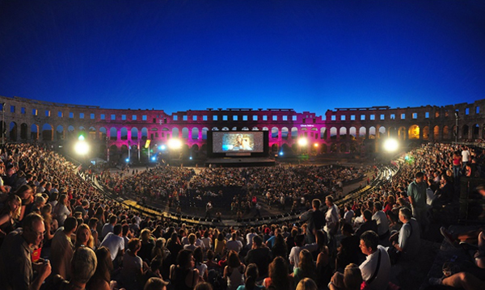
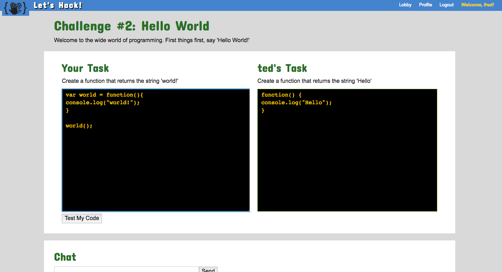

Portfolio
Here are some examples of my past work
-

Tukio
Community Driven Ticketing
A React.js application that uses MySQL, Express.js, and Node.js on the back-end. The concept of tukio is based on a community deciding which events they want to see at discounted prices. My invovlement in the project included setting up the entire database and routes used for the app. I also used React.js to create the search, checkboxes, and results components.


-

Firebase - Rock, Paper, Scissors
An Online Multiplayer of a Classic
Rock, Paper, Scissors was a crash course on Firebase and multiple state experiences. One user is player one with their own view, while the other is player two with a completely separate view. Solving the puzzle of differing views in realtime was an incredibly enriching experience.


-
That's My Jam
Putting Instagram on the Map!
A web application using the Instagram API and Google Maps API to visualize your friend's food photos based on geo-location. My role was to implement Material Design Lite into the website.
-

Lets Hack
Cooperative Problem Solving using JavaScript
letsHack is team based Node application that utilizes sockets.io for realtime chat and pair programming. The application has players solving javascript problems at the same time to complete the challenge. I used Passport.js for the authentication and Cloudinary for the image uploading features.